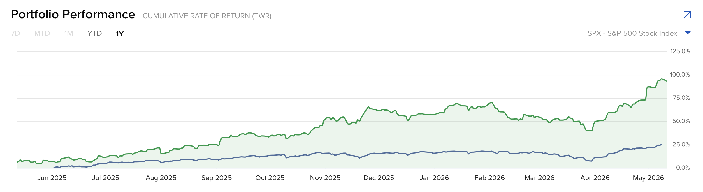

Hi, I’m
I turn market data into insights. Specialist in financial research
About
Statistics student at the University of Waterloo, graduating in August 2026, My work focuses on financial markets, crypto, risk analysis, and business analytics. I use Python, R, SQL, Excel, and BI tools to transform complex datasets into practical insights. I am highly sensitive to data and patterns, have developed my own trading strategy model, and independently passed CFA Level I. I am eager to start my career in finance, helping your firm growing your business and making an impact.
Projects
A financial research project examining whether market fear amplifies the dynamic correlation between Bitcoin and the Nasdaq index.
View Paper →A deployed quantitative strategy website presenting my trading logic, signal framework, performance analysis, and risk management approach.
View Strategy →Portfolio Returns
A visual performance summary of my personal stock portfolio returns. The chart highlights cumulative return performance and provides a simple overview of my portfolio tracking process.

Skills
Contact
I am currently open to opportunities in data analysis, financial analysis, business analytics, and crypto market research.